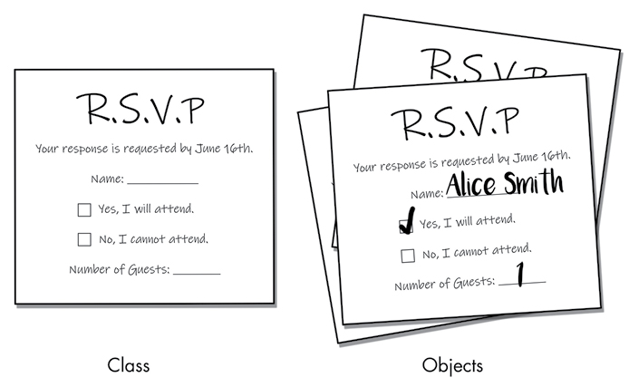
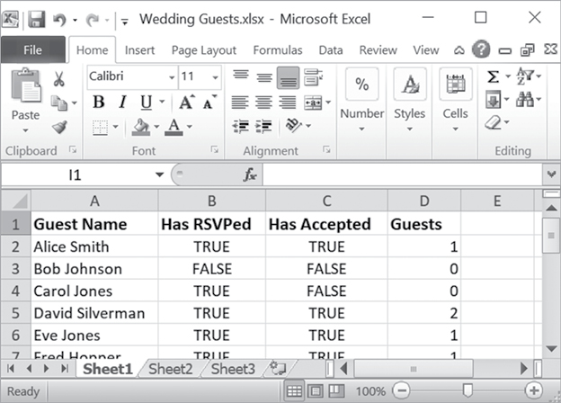
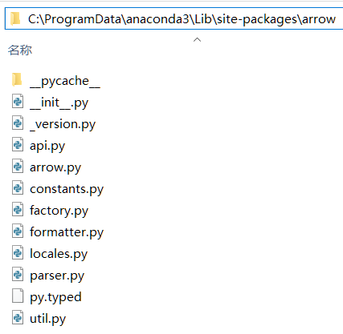

“Python 是一门面向对象的编程语言”
简介
本章的目的不是教你编程，而是为了让你更好地理解 Python 的语法规则。
对于初学 Python 的人而言，“Python 是一门面向对象的编程 (OOP) 语言” 这样的表述想必并不陌生。然而，“面向对象”究竟是什么，尤其是“对象”的概念，却常常让人摸不着头脑。以众多 Stata 老用户为例，当他们初次见到下面这段代码时，往往会陷入困惑：
import statsmodels.api as sm
import pandas as pd
# 加载示例数据
mtcars = sm.datasets.get_rdataset('mtcars', 'datasets').data
# 模型 1
X1 = mtcars[['wt']]
X1 = sm.add_constant(X1)
y = mtcars['mpg']
model1 = sm.OLS(y, X1).fit()
print(model1.summary())
OLS Regression Results
==============================================================================
Dep. Variable: mpg R-squared: 0.753
Model: OLS Adj. R-squared: 0.745
Method: Least Squares F-statistic: 91.38
Date: Sat, 24 May 2025 Prob (F-statistic): 1.29e-10
Time: 01:31:42 Log-Likelihood: -80.015
No. Observations: 32 AIC: 164.0
Df Residuals: 30 BIC: 167.0
Df Model: 1
Covariance Type: nonrobust
==============================================================================
coef std err t P>|t| [0.025 0.975]
------------------------------------------------------------------------------
const 37.2851 1.878 19.858 0.000 33.450 41.120
wt -5.3445 0.559 -9.559 0.000 -6.486 -4.203
==============================================================================
Omnibus: 2.988 Durbin-Watson: 1.252
Prob(Omnibus): 0.225 Jarque-Bera (JB): 2.399
Skew: 0.668 Prob(JB): 0.301
Kurtosis: 2.877 Cond. No. 12.7
==============================================================================
Notes:
[1] Standard Errors assume that the covariance matrix of the errors is correctly specified.
在 mtcars = sm.datasets.get_rdataset('mtcars', 'datasets').data 这条语句中，呈现出 sm.A.B().C 的形式。初学者不免产生如下疑问：
- 这里面哪些是函数 (function)？
- 哪些是方法 (method)？
- 哪些又是对象的属性呢？
- 需要学习哪些概念才能搞清楚这些语句的编写规则？
同样令人费解的语句还有 model1 = sm.OLS(y, X1).fit()。
上述问题其实是近两年 Python 学习者普遍面临的困惑。有了 AI 助手（如豆包、Copilot 等），很多人得以快速上手 Python。但好景不长，大家很快就会遭遇瓶颈。面对 AI 自动生成的代码，自己往往一知半解，基本不具备调试和修改代码的能力。这就导致在使用 Python 一段时间后，自身编写代码的能力始终难以显著提升，还总是花费大量时间进行调试，从而无法集中精力思考更高级的问题。
为此，本文将详细介绍 Python 面向对象编程的核心概念，帮你深入理解 Python 代码的逻辑和结构关系，进而提升编写 Python 代码的能力。接下来，我们就将逐步解答上述代码中的疑问。
类 v.s 对象：直观解释
解读 1 - 填写表格：空白表是「类」，填好的表式「对象 (实例)」
我们经常需要填写纸质或电子表格：去医院看病、网上购物、或者参加婚礼需要回复 RSVP。表格就是一种标准化的方式，方便他人或机构收集你的信息。不同的表格关注的信息各不相同：你会在医生的表格上填写敏感的健康状况，而婚礼邀请回复表格则关注你会带几位嘉宾 —— 这两种信息互不相干。
在 Python 中，class（类）、type（类型）、data type（数据类型）这些术语基本等价。可以按照如下逻辑来理解：
- 可以把类看作是 Python 对象（也称为「实例」）的模板 (blueprint)；
- 对象则是具体的数据实体，代表某个「名词」（可以是医院里的病人、网上的购物订单、婚礼的嘉宾等等）。
- 类就像是一张空白表格模板，而对象就是基于这个模板，实际填写了数据的具体表格。
比如，下图中的 RSVP 回复表格就是类的一个例子，而具体填写好的 RSVP 回执，就是一个对象：

Source：15 Object-Oriented Programming and Classes
另一种类比：电子表格（Excel）
你还可以把类和对象类比为电子表格（比如 Excel），如下图所示。表格的列名就类似于类（定义了每个属性），而表格的每一行就相当于一个具体对象（包含具体的数据）。

下面，我们做详细介绍。
类、对象、封装、继承和多态
类（Class）
类是对象的模板，它定义了对象的属性和方法，可将其视为一种自定义的数据类型。以 Person 类为例：
class Person:
def __init__(self, name, age):
self.name = name
self.age = age
def introduce(self):
print(f"我叫 {self.name}，今年 {self.age} 岁。")
Person 类包含两个函数，分别是 __init__() 和 introduce()。前者用于定义「对象的属性」，后者用于定义「对象的方法」。具体说明如下：
__init__() 是一个特殊的函数，称为「构造函数」。它的作用是在创建类的对象时，初始化 对象的属性。在这个例子里，__init__() 定义了 Person 类的两个属性，即 name 和 age。introduce() 函数定义了 Person 类的一个方法，其功能是打印出对象的 name 和 age 信息。
这里要着重说明一下 self 这个参数。在 Python 的类中，self 是一个约定俗成的参数名，它代表类的实例对象本身。当你调用类的方法时，Python 会自动将调用该方法的对象作为第一个参数传递给 self。借助 self，方法能够访问和修改对象的属性。
例如，在 __init__() 方法里，self.name = name 这一操作把传入的 name 参数值赋给了对象的 name 属性；在 introduce() 方法中，self.name 和 self.age 用于获取对象的 name 和 age 属性值。
对象（Object）
对象是类的实例。通过类能够创建多个不同的对象，每个对象都有自己独立的属性值。例如：
p1 = Person("张三", 20)
p2 = Person("李四", 25)
print(p1.name) # 输出: 张三
print(p2.name) # 输出: 李四
p1.introduce() # 输出: 我叫 张三，今年 20 岁。
p2.introduce() # 输出: 我叫 李四，今年 25 岁。
张三
李四
我叫 张三，今年 20 岁。
我叫 李四，今年 25 岁。
此例中，p1 和 p2 是 Person 类的两个不同对象。p1.name 的值是 “张三”，p2.name 的值是 “李四”，这体现了不同对象的属性可以有不同的值。
封装（Encapsulation）
封装是面向对象编程的一个重要特性，它指的是将数据（属性）和操作数据的方法捆绑在一起，并且对外部隐藏对象的内部实现细节。封装的作用主要体现在以下几个方面：
- 数据保护：防止外部代码直接访问和修改对象的属性，从而避免数据被意外修改或破坏。
- 简化接口：只向外部暴露必要的方法，隐藏内部实现细节，降低外部代码与对象之间的耦合度，使代码更易于维护和扩展。
在 Python 中，可以通过访问控制来实现封装。虽然 Python 没有像其他语言那样严格的访问修饰符（如 private、protected），但可以通过约定来表示属性或方法的访问级别。以单下划线开头的属性或方法被视为受保护的，以双下划线开头的属性或方法被视为私有的。例如：
class BankAccount:
def __init__(self, balance):
self.__balance = balance
def deposit(self, amount):
self.__balance += amount
def withdraw(self, amount):
if amount <= self.__balance:
self.__balance -= amount
else:
print("余额不足")
def get_balance(self):
return self.__balance
account = BankAccount(1000)
account.deposit(500)
account.withdraw(200)
print(account.get_balance()) # 输出: 1300
在这个例子中，__balance 是一个私有属性，外部不能直接访问，只能通过 deposit、withdraw 和 get_balance 等方法来操作。这样就保证了账户余额的安全性，外部代码无法随意修改余额。
4. 继承（Inheritance）
继承是指一个类可以继承另一个类的属性和方法。被继承的类称为父类（基类），继承的类称为子类（派生类）。子类可以扩展父类的功能，也可以重写父类的方法。例如：
class Student(Person):
def __init__(self, name, age, student_id):
super().__init__(name, age)
self.student_id = student_id
def study(self):
print(f"{self.name} 正在学习。")
stu = Student("王五", 18, "001")
stu.introduce()
stu.study()
在这个例子中，Student 类继承了 Person 类的属性和方法，并添加了自己的属性 student_id 和方法 study。super().__init__(name, age) 调用了父类的构造函数，对 name 和 age 属性进行初始化。
多态（Polymorphism）
多态是指不同的对象可以对同一个操作做出不同的响应。下面通过几个例子来帮助你理解多态的概念和应用。
简单数据类型示例
a = 5
b = "apple"
print(a * 3) # 输出: 15
print(b * 3) # 输出: appleappleapple
可见，* 运算符对于整数 a 和字符串 b 有不同的行为：
- 对于整数，
* 表示乘法运算；
- 对于字符串，
* 表示重复字符串。
这就是多态的体现，同一个运算符在不同的数据类型上有不同的操作。
类的方法重写示例
class Shape:
def area(self):
pass
class Rectangle(Shape):
def __init__(self, length, width):
self.length = length
self.width = width
def area(self):
return self.length * self.width
class Circle(Shape):
def __init__(self, radius):
self.radius = radius
def area(self):
return 3.14 * self.radius * self.radius
shapes = [Rectangle(4, 5), Circle(3)]
for shape in shapes:
print(shape.area())
在这个例子中，Rectangle 和 Circle 类都继承自 Shape 类，并且重写了 area 方法。当我们遍历 shapes 列表并调用每个对象的 area 方法时，不同的对象会根据自己的实现方式计算并返回面积，这也是多态的应用。
Python 支持多态的原因
Python 能够支持多态，主要得益于其动态类型的特性。在 Python 中，变量在声明时不需要预先指定数据类型，变量的类型是在运行时动态确定的。这意味着一个变量可以在不同的时刻引用不同类型的对象。当调用一个函数或方法时，Python 不会关心对象的具体类型，只要对象实现了所需的方法或属性，就可以正常调用。
这种特性使得 Python 代码更加灵活，能够轻松实现多态。例如，在上面的 shapes 列表中，Rectangle 和 Circle 对象虽然类型不同，但都实现了 area 方法，因此可以统一调用 area 方法来计算面积。
面向对象概念在具体包和函数中的应用
在实际的 Python 编程中，面向对象编程的概念广泛应用于各种包和函数中。下面以 pandas 和 matplotlib 这两个常用的包为例进行说明。
pandas 中的应用
pandas 是一个用于数据处理和分析的强大包，其中大量使用了类和对象的概念。例如，DataFrame 是 pandas 中最常用的类之一，用于表示二维表格数据。
import pandas as pd
# 创建一个 DataFrame 对象
data = {
'Name': ['张三', '李四', '王五'],
'Age': [20, 25, 18]
}
df = pd.DataFrame(data)
# 使用 DataFrame 的方法
print(df.head()) # 查看数据集行数
print('-' * 20)
print(df.describe().T.round(2)) # T 表示转置
Name Age
0 张三 20
1 李四 25
2 王五 18
--------------------
count mean std min 25% 50% 75% max
Age 3.0 21.0 3.61 18.0 19.0 20.0 22.5 25.0
此例中，pd.DataFrame 是一个类，df 是 DataFrame 类的一个对象。
我们可以调用 df 对象的各种方法，如 head() 和 describe()，来对数据进行操作和分析。甚至可以采用链式调用的方式来连续执行多个操作，如 df.describe().T.round(2) 表示对 df 对象依次进行如下操作：计算基本统计量 → 转置 → 四舍五入 (保留两位有效数字)。
matplotlib 中的应用
matplotlib 是一个用于数据可视化的包，也广泛应用了面向对象编程的思想。例如，我们可以使用 Figure 和 Axes 类来创建和定制图形。
import matplotlib.pyplot as plt
# 创建一个 Figure 对象和一个 Axes 对象
fig, ax = plt.subplots(figsize=(2, 2))
# 绘制数据
x = [1, 2, 3, 4, 5]
y = [2, 4, 6, 8, 10]
ax.plot(x, y)
# 设置图形属性
ax.set_title('line plot')
ax.set_xlabel('X')
ax.set_ylabel('Y')
# 显示图形
plt.show()
在这个例子中，fig 是 Figure 类的对象，ax 是 Axes 类的对象。
我们可以通过调用 ax 对象的方法，如 plot()、set_title()、set_xlabel() 和 set_ylabel() 来绘制和定制图形。这体现了面向对象编程在 matplotlib 中的应用，通过将图形的不同部分封装成对象，使得图形的创建和定制更加灵活和可控。
包、函数、方法和属性
我们先简要介绍一下理解复杂语句所需的基础概念。
包（Package）和模块（Module）
模块（Module）
- 模块是单个
.py 文件，包含函数、类、变量等代码。
- 例如：
arrow.api.py 是一个模块，包含 get() 函数。numpy.random.py 也是一个模块，内含若干个用于生成随机数的函数。
包（Package）
包是一个包含多个模块的目录，通常还包含一个 __init__.py 文件。
一个包中可以包含多个子包，而每个包中又可以包含多个模块。包的目录结构类似于文件系统的目录结构。__init__.py 文件的作用是标识该目录是一个包，更重要的是，它详细记录了这个包里都有哪些模块和子包。
包通过目录结构组织代码，例如：
pandas/ # 根包
__init__.py # 标识这是一个包
core/ # 子包
__init__.py
frame.py # 模块（定义 DataFrame）
series.py # 模块（定义 Series）
io/ # 子包
__init__.py
excel.py # 模块（处理 Excel 文件）
比如，arrow 是一个用于处理日期和时间的包，该包的程序文件存放于 arrow 目录下：

其中包含 __init__.py 文件和其他模块文件（如 arrow.py、util.py 等）。当你使用 import arrow 时，Python 会自动执行 __init__.py 文件中的代码，从而初始化包的命名空间。
你若执行 from arrow import api，则会导入 arrow 包中的 api 模块。然后你可以使用 api 模块中的函数和类，例如 api.get()。
import arrow as ar
# 查看 arrow 的类型
print(type(ar))
# 查看 arrow 的路径
print(ar.__file__)
# 输出类似：/path/to/site-packages/arrow/__init__.py
# 这表明 arrow 是包含多个子包的根目录。
<class 'module'>
c:\ProgramData\anaconda3\Lib\site-packages\arrow\__init__.py
同理，你可以使用如下方法查看其他包的路径：
import pandas as pd
print(pd.__file__) # 查看 pandas 的路径
c:\ProgramData\anaconda3\Lib\site-packages\pandas\__init__.py
函数（Function）和方法（Method）
函数是一段完成特定任务的独立代码块，可以直接调用。而方法是与对象关联的函数，必须通过对象来调用。例如，
- 在
sm.datasets.get_rdataset() 中，get_rdataset() 是一个函数，它属于 statsmodels 包中 datasets 模块。
- 在
model1 = sm.OLS(y, X1).fit() 中：
OLS() 是 sm 包中的一个函数，用于创建一个普通最小二乘回归模型对象。sm.OLS(y, X1) 创建了一个 OLS 对象。
fit() 是 sm.OLS(y, X1) 创建的对象的方法。
类中的属性（Attribute）和方法（Method）
属性 是类或对象的数据成员，而 方法 则是类或对象的函数成员。
因此，在 mtcars = sm.datasets.get_rdataset('mtcars', 'datasets').data 中，.data 就是 get_rdataset() 函数返回的对象的一个属性，里面存储着对象里的数据。
解析复杂语句
现在我们来详细解析引言中提到的复杂语句：
import statsmodels.api as sm
# 加载示例数据
mtcars = sm.datasets.get_rdataset('mtcars', 'datasets').data
mtcars.head()
具体解释如下：
sm 是 statsmodels.api 模块的别名。datasets 是 sm 下的一个子模块，专门用于访问内置或外部数据集。get_rdataset('mtcars', 'datasets') 是 datasets 子模块中的一个函数，用于从 R 的数据集仓库中的 datasets 包中获取名为 'mtcars' 的数据集。这个函数会返回一个包含数据集及其元信息 (meta information) 的对象 (可以假想为名称为 mtcars_object 的对象)。.data 是对象 mtcars_object 的一个属性，用于提取实际的数据内容（通常为一个 pandas.DataFrame）。- 因此，最终得到的
mtcars 变量就是一个 pandas.DataFrame 对象，包含了 'mtcars' 数据集的实际数据。
mtcars.head() 是 pandas.DataFrame 对象的方法，用于查看数据集的前几行数据。
需要注意的是，在上述语句中，datasets 这个关键词出现了两次，两者含义不同，不要混淆：
- 第一次是指
sm 下的 datasets 子模块；
- 第二次是作为参数传递给
get_rdataset() 函数，它是 R 语言中的一个扩展包的名称，而 mtcars 则是 datasets 包中的一个数据集。
把上述代码拆成两行更有助于理解 模块、函数 和 属性 这三个概念的区别：
import statsmodels.api as sm
# 获取数据集对象：'object = 模块.函数()' 格式
# 本例中：'object = 模块.子模块.函数(参数1, 参数2)' 格式
mtcars_object = sm.datasets.get_rdataset('mtcars', 'datasets')
# 获取数据集内容：'object.属性' 格式
mtcars_df = mtcars_object.data
可以将这行代码拆解为以下几步，更便于初学者理解：
# 第一步：获取 datasets 子模块
datasets_module = sm.datasets
# 第二步：调用 get_rdataset 函数获取数据集对象
rdataset = datasets_module.get_rdataset('mtcars', 'datasets')
# - 'mtcars' 是数据集的名称
# - 'datasets' 是数据集所在的包名
# 第三步：通过 data 属性获取实际的数据
mtcars = rdataset.data
至此，代码的第二部分也很容易理解了：
# 模型 1
X1 = data[['weight']]
X1 = sm.add_constant(X1)
y = data['mpg']
model1 = sm.OLS(y, X1).fit()
解释如下：
sm.OLS(y, X1)：
OLS 是 statsmodels.api 模块中的一个类，用于创建一个普通最小二乘回归模型的对象。这里传入的参数 y 是因变量，X1 是自变量。
.fit()：是 sm.OLS(y, X1) 创建的对象的方法，用于拟合模型，即根据输入的数据计算模型的参数。
总结
- 模块是单个
.py 文件，包含函数、类、变量等代码。
- 包是一个包含多个模块的目录，通常还包含一个
__init__.py 文件。
- 类是对象的模板，它定义了对象的属性和方法。
- 对象是类的实例。通过类能够创建多个不同的对象，每个对象都有自己独立的属性值。
- 封装是将数据（属性）和操作数据的方法捆绑在一起，并对外部隐藏对象的内部实现细节。
- 继承是一个类可以继承另一个类的属性和方法。
- 多态是指不同的对象可以对同一个操作做出不同的响应。
- 函数是一段完成特定任务的独立代码块，可以直接调用。